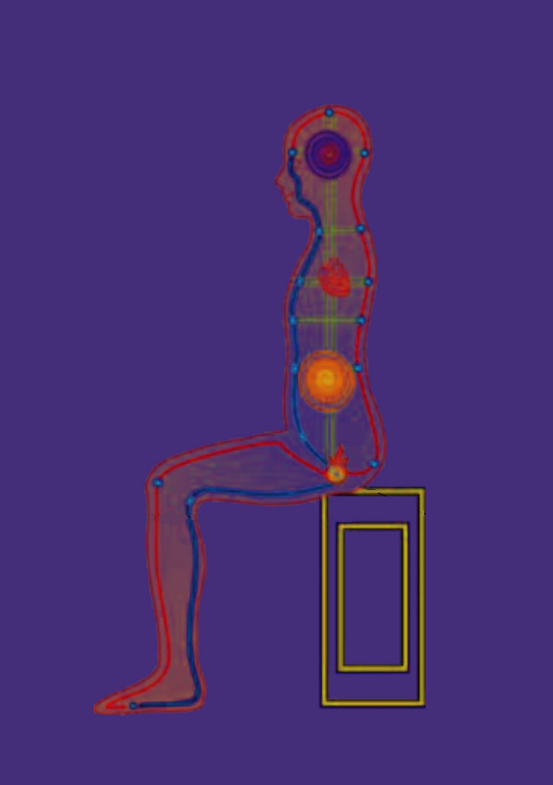

 Inner meditation is a particularly beneficial practice. You look at, listen to, and concentrate on the insides of your own self by applying few basic techniques in concert, such as good body posture, proper breathing methods, relaxation, and mental power. It brings all your attention and awareness inward and circulates energy flows inside your body.
This triggers profound changes in the body and the brain. It develops and improves body energy flow, also known as qi (pronounce chee). The development of qi within your own body enhances health, generates a sense of calm and well-being, and replenishes inner energy reserves. Furthermore, it develops awareness and consciousness based on improved body conditions, and this leads you along on a path of spiritual enlightenment.
People start to feel physical and mental changes after they practice inner meditation for some time because this practice has healing effects in nature. Some people even begin to heal others. Here are some commonly seen benefits.
Inner meditation is an art of practice. You must practice it in order to get its benefits. Its goal is improving your body and brain, and the only natural way is exercising your body and brain with certain disciplines. Inner meditation is all about practicing such disciplines. You may have a taste of its practices here.